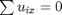
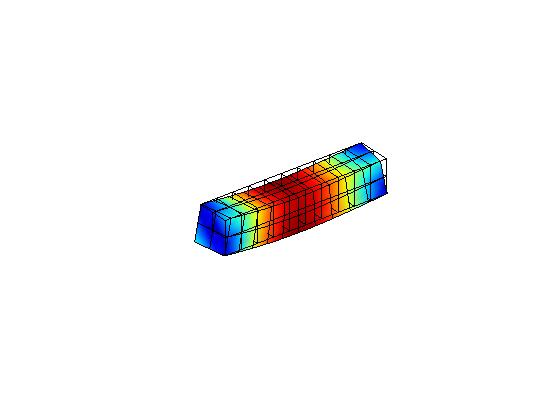
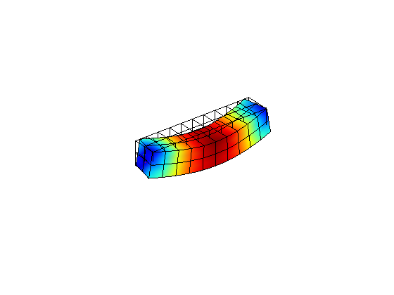
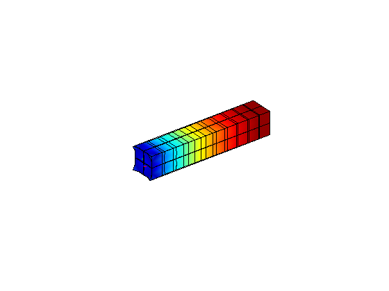
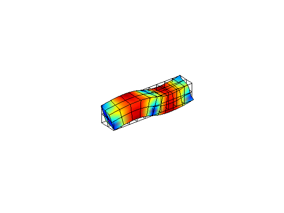
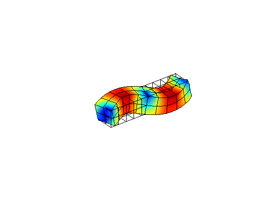
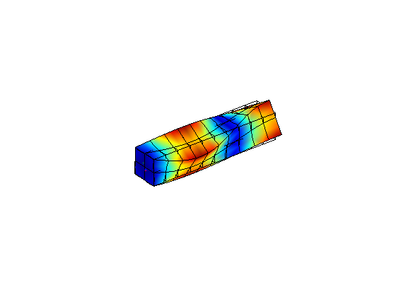
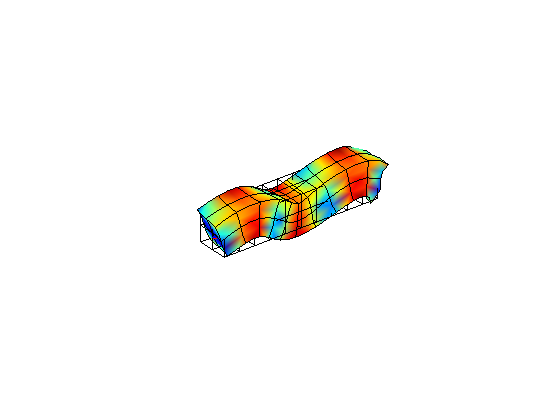
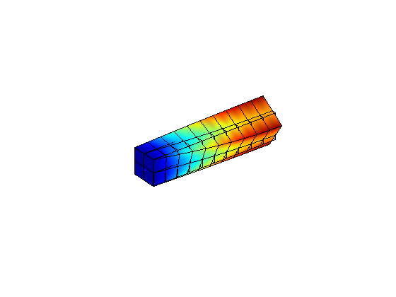
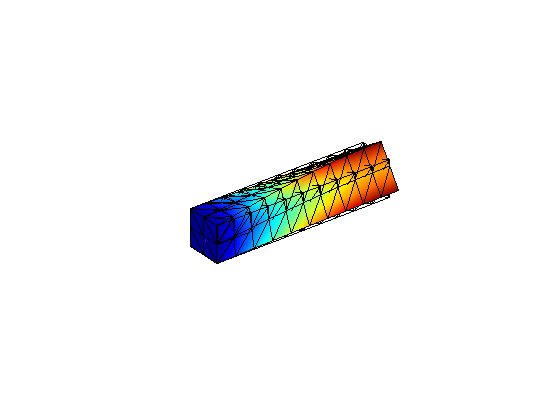

Free harmonic vibration of a deep beam.
Contents
Link to the m-file.
Description
This is a test recommended by the National Agency for Finite Element Methods and Standards (U.K.): Test 5 from NAFEMS “Selected Benchmarks for Forced Vibration,” R0016, March 1993.
The beam is going to be modeled as a three-dimensional solid, with solid elements. The beam geometry is given as

The beam is assumed to be simply supported at the ends transversely. The cross-section at is also pinned in the axial direction and rotation about the axis of the beam is prevented. In the cross-section at both the axial rotation and the axial displacement are allowed.
For the solid 3-D beam this seems impossible to achieve just the mechanism of essential boundary conditions. In this tutorial we will apply multi point constraints (MPCs) to construct the pinned conditions.
The transverse and axial-rotation constrains at is implemented by attaching rollers in the direction of the axes perpendicular to the beam in both directions on the entire cross-sectional area.
The axial constraint at is implemented with a multi-point constraint of the form

Solution
The code is placed inside a Matlab function in order to be able to define the simulation in a nested function.
function pub_test5_vibration
Define the material properties.
pu=physical_units_struct;
% Parameters:
E = 200e3*pu.MEGA*pu.PA;
nu = 0.3;
rho= 8000*pu.KG/pu.M^3;
Define the geometry and the geometrical tolerance.
a=2.00*pu.M; b=2.00*pu.M; L= 10*pu.M;
tolerance =a/1000;
The reference solutions for the natural frequencies are:
f_fundamental =[ 42.6580 42.6580 71.2610 125.0000 ... 148.7200 148.7200 213.8900 287.8400 ... 287.8400]; f_fundamental_kind={'flexural','flexural','torsional','extensional',... 'flexural','flexural','torsional','flexural',... 'flexural'};
Mesh parameters are defined here: number of element edges per dimension.
na= 2; nb= 2; nL =10;
These are the material properties for an isotropic homogeneous material.
prop=property_deformation_linear_iso(struct('E',E,'nu',nu,'rho',rho)); mater = material_deformation_linear_triax (struct('property',prop ));
Warning: The class file for 'material_deformation_linear_triax' has been changed, but the change cannot be applied because objects based on the old class file still exist. If you use those objects, you might get unexpected results. You can use the 'clear' command to remove those objects. See 'help clear' for information on how to remove those objects.
The simulation will be carried out for selected element types using this function. It sets up the model, runs the free vibration analysis, and reports the results.
function simulate(description, mf, femmf, mode_to_show) % Create the mesh and initialize the geometry [fens,fes]= mf(L,a,b,nL,na,nb); % Shift the geometry so that the axis of the beam is along the % X-axis of the global coordinate system. fens = transform_apply(fens,@(x,d)(x-[0,a/2,b/2]), []); % Select the boundary faces for the application of the transverse load. bfes= mesh_boundary(fes,[]); topl =fe_select (fens,bfes,struct('box', [0,L,-Inf,Inf,b/2,b/2],... 'inflate',tolerance)); % Compose the model data clear model_data model_data.fens =fens; % Set the finite element model machine clear region region.femm= femmf(fes); model_data.region{1} =region; % Both cross-sections of the beam are % supported by rollers. In the 3-D solid this will be accomplished by % restraining translation in the direction of the support at all nodes % in the cross-section. clear essential essential.component= [2,3];%restrain both cross-sections with rollers essential.fixed_value= 0; essential.node_list = [... fenode_select(fens, struct('box', [0,0,-Inf,Inf,-Inf,Inf],... 'inflate',tolerance))]; model_data.boundary_conditions.essential{1} = essential; % Define the essential boundary conditions. At least one point needs to % be restrained axially. clear mpc mpc.node_list = [fenode_select(fens, ... struct('box', [0,0,-Inf,Inf,-Inf,Inf],'inflate',tolerance))]; mpc.dof_list=1+zeros(size(mpc.node_list)); mpc.umultipliers=ones(size(mpc.node_list)); mpc.penfact=1e16; model_data.mpc{1} = mpc; clear mpc mpc.node_list = [fenode_select(fens, ... struct('box', [L,L,-Inf,Inf,-Inf,Inf],'inflate',tolerance))]; mpc.dof_list=2+zeros(size(mpc.node_list)); mpc.umultipliers=ones(size(mpc.node_list)); mpc.penfact=1e16; model_data.mpc{2} = mpc; clear mpc mpc.node_list = [fenode_select(fens, ... struct('box', [L,L,-Inf,Inf,-Inf,Inf],'inflate',tolerance))]; mpc.dof_list=3+zeros(size(mpc.node_list)); mpc.umultipliers=ones(size(mpc.node_list)); mpc.penfact=1e16; model_data.mpc{3} = mpc; model_data.neigvs= 20; model_data.omega_shift=0; model_data.use_factorization= true; % Solve model_data = deformation_linear_modal_analysis(model_data); % These are the natural frequencies in hertz f=model_data.Omega(1:9)'/2/pi; disp ([description ': ']) for j=1:length(f) disp(['Natural frequency ' num2str(j) ' = ' ... num2str(f(j)) ' [Hz]' ]); disp([' f/f_analytical=' num2str(f(j)./f_fundamental(j)*100)... '% (' f_fundamental_kind{j} ')']); end % Plot the resulting mode shape(s) requested. model_data.postprocessing.u_scale= 2; for j=1:length(mode_to_show) disp('====================================================') disp(['Natural frequency ' num2str(j) ' = ' ... num2str(f(j)) ' [Hz]' ]); disp([' f/f_analytical=' num2str(f(j)./f_fundamental(j)*100)... '% (' f_fundamental_kind{j} ')']); model_data.postprocessing.modelist= mode_to_show(j); model_data=deformation_plot_modes(model_data); snapnow; end end
The 20-node serendipity hexahedron which is a very accurate element in general yields good results here.
description ='H20R';
mf =@H20_block;
Note that we are specifying integration rule for both the stiffness and the mass matrix. Hence the mass matrix will be singular.
femmf =@(fes)femm_deformation_linear(struct('fes',fes, ... 'material',mater,... 'integration_rule',gauss_rule(struct('dim',3, 'order',2)))); simulate(description, mf, femmf, 1:8);
H20R: Natural frequency 1 = 42.5683 [Hz] f/f_analytical=99.7897% (flexural) Natural frequency 2 = 42.5683 [Hz] f/f_analytical=99.7897% (flexural) Natural frequency 3 = 71.4701 [Hz] f/f_analytical=100.2935% (torsional) Natural frequency 4 = 119.2502 [Hz] f/f_analytical=95.4001% (extensional) Natural frequency 5 = 147.4046 [Hz] f/f_analytical=99.1155% (flexural) Natural frequency 6 = 147.4046 [Hz] f/f_analytical=99.1155% (flexural) Natural frequency 7 = 214.395 [Hz] f/f_analytical=100.2361% (torsional) Natural frequency 8 = 281.2767 [Hz] f/f_analytical=97.7198% (flexural) Natural frequency 9 = 281.2767 [Hz] f/f_analytical=97.7198% (flexural) ==================================================== Natural frequency 1 = 42.5683 [Hz] f/f_analytical=99.7897% (flexural) Mode 1, frequency 42.5683
==================================================== Natural frequency 2 = 42.5683 [Hz] f/f_analytical=99.7897% (flexural) Mode 2, frequency 42.5683
==================================================== Natural frequency 3 = 71.4701 [Hz] f/f_analytical=100.2935% (torsional) Mode 3, frequency 71.4701
==================================================== Natural frequency 4 = 119.2502 [Hz] f/f_analytical=95.4001% (extensional) Mode 4, frequency 119.2502
==================================================== Natural frequency 5 = 147.4046 [Hz] f/f_analytical=99.1155% (flexural) Mode 5, frequency 147.4046
==================================================== Natural frequency 6 = 147.4046 [Hz] f/f_analytical=99.1155% (flexural) Mode 6, frequency 147.4046
==================================================== Natural frequency 7 = 214.395 [Hz] f/f_analytical=100.2361% (torsional) Mode 7, frequency 214.395
==================================================== Natural frequency 8 = 281.2767 [Hz] f/f_analytical=97.7198% (flexural) Mode 8, frequency 281.2767
For this material (compressible) and this type of structure (massive) the fully-integrated hexahedron would also work well. We can therefore use the same element with Gauss rule one order higher. The consistent mass matrix will no longer be singular. Note that the accuracy of the third mode (torsional) improved.
femmf =@(fes)femm_deformation_linear(struct('fes',fes, ... 'material',mater,... 'integration_rule',gauss_rule(struct('dim',3, 'order',3)))); simulate(description, mf, femmf, 3);
H20R: Natural frequency 1 = 42.607 [Hz] f/f_analytical=99.8804% (flexural) Natural frequency 2 = 42.607 [Hz] f/f_analytical=99.8804% (flexural) Natural frequency 3 = 71.7167 [Hz] f/f_analytical=100.6394% (torsional) Natural frequency 4 = 120.7623 [Hz] f/f_analytical=96.6099% (extensional) Natural frequency 5 = 147.8394 [Hz] f/f_analytical=99.4079% (flexural) Natural frequency 6 = 147.8394 [Hz] f/f_analytical=99.4079% (flexural) Natural frequency 7 = 215.2345 [Hz] f/f_analytical=100.6286% (torsional) Natural frequency 8 = 282.8189 [Hz] f/f_analytical=98.2556% (flexural) Natural frequency 9 = 282.8189 [Hz] f/f_analytical=98.2556% (flexural) ==================================================== Natural frequency 1 = 42.607 [Hz] f/f_analytical=99.8804% (flexural) Mode 3, frequency 71.7167
Here we look specifically at the third, torsional, mode.
femmf =@(fes)femm_deformation_linear(struct('fes',fes, ... 'material',mater,... 'integration_rule',gauss_rule(struct('dim',3, 'order',3)))); simulate(description, mf, femmf, 3);
H20R: Natural frequency 1 = 42.607 [Hz] f/f_analytical=99.8804% (flexural) Natural frequency 2 = 42.607 [Hz] f/f_analytical=99.8804% (flexural) Natural frequency 3 = 71.7167 [Hz] f/f_analytical=100.6394% (torsional) Natural frequency 4 = 120.7623 [Hz] f/f_analytical=96.6099% (extensional) Natural frequency 5 = 147.8394 [Hz] f/f_analytical=99.4079% (flexural) Natural frequency 6 = 147.8394 [Hz] f/f_analytical=99.4079% (flexural) Natural frequency 7 = 215.2345 [Hz] f/f_analytical=100.6286% (torsional) Natural frequency 8 = 282.8189 [Hz] f/f_analytical=98.2556% (flexural) Natural frequency 9 = 282.8189 [Hz] f/f_analytical=98.2556% (flexural) ==================================================== Natural frequency 1 = 42.607 [Hz] f/f_analytical=99.8804% (flexural) Mode 3, frequency 71.7167
Here we look specifically at the third, torsional, mode.
femmf =@(fes)femm_deformation_linear(struct('fes',fes, ... 'material',mater,... 'integration_rule',gauss_rule(struct('dim',3, 'order',2)))); simulate(description, mf, femmf, 3);
H20R: Natural frequency 1 = 42.5683 [Hz] f/f_analytical=99.7897% (flexural) Natural frequency 2 = 42.5683 [Hz] f/f_analytical=99.7897% (flexural) Natural frequency 3 = 71.4701 [Hz] f/f_analytical=100.2935% (torsional) Natural frequency 4 = 119.2502 [Hz] f/f_analytical=95.4001% (extensional) Natural frequency 5 = 147.4046 [Hz] f/f_analytical=99.1155% (flexural) Natural frequency 6 = 147.4046 [Hz] f/f_analytical=99.1155% (flexural) Natural frequency 7 = 214.395 [Hz] f/f_analytical=100.2361% (torsional) Natural frequency 8 = 281.2767 [Hz] f/f_analytical=97.7198% (flexural) Natural frequency 9 = 281.2767 [Hz] f/f_analytical=97.7198% (flexural) ==================================================== Natural frequency 1 = 42.5683 [Hz] f/f_analytical=99.7897% (flexural) Mode 3, frequency 71.4701
It is also possible to use different quadrature rules for stiffness and mass calculations. The tutorial pub_test5_vibration_sep explains how to do this.
The quadratic tetrahedron, the workhorse of many linear stress analysis packages, produces good-quality results.
description ='T10';% tetrahedron mf =@T10_block; femmf =@(fes)femm_deformation_linear(struct('fes',fes,... 'material',mater,... 'integration_rule',tet_rule(struct('npts',4)))); simulate(description, mf, femmf, 3);
T10: Natural frequency 1 = 42.6894 [Hz] f/f_analytical=100.0737% (flexural) Natural frequency 2 = 42.6957 [Hz] f/f_analytical=100.0885% (flexural) Natural frequency 3 = 72.5197 [Hz] f/f_analytical=101.7663% (torsional) Natural frequency 4 = 123.6338 [Hz] f/f_analytical=98.907% (extensional) Natural frequency 5 = 148.8174 [Hz] f/f_analytical=100.0655% (flexural) Natural frequency 6 = 148.8808 [Hz] f/f_analytical=100.1081% (flexural) Natural frequency 7 = 218.4128 [Hz] f/f_analytical=102.1145% (torsional) Natural frequency 8 = 286.401 [Hz] f/f_analytical=99.5001% (flexural) Natural frequency 9 = 286.6502 [Hz] f/f_analytical=99.5866% (flexural) ==================================================== Natural frequency 1 = 42.6894 [Hz] f/f_analytical=100.0737% (flexural) Mode 3, frequency 72.5197
Discussion
To compare vibration results produced by different finite element models needs to be done both numerically and visually. Even though the frequencies may seem close, the mode shapes may be different.
end